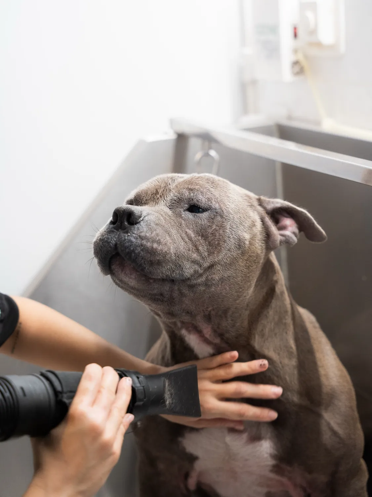

Corte a tijera
Hay cortes que se ven bonitos. Y cortes que, además, se viven cómodos. Encontramos el suyo, tijera a tijera.

Del corte a tijera al baño de ozono: cada servicio se hace uno a uno, sin jaulas y con todo el tiempo que tu perro necesita. Elige el suyo o cuéntanos y lo decidimos juntos.
Filtra por tipo de cuidado o entra en cualquiera para ver cómo lo hacemos, qué incluye y a qué perros va dirigido.
 Corte a tijeraUn corte pensado para su manto, su personalidad y vuestra vida juntos.Estilismo
Corte a tijeraUn corte pensado para su manto, su personalidad y vuestra vida juntos.Estilismo StrippingTrabajo manual para respetar la textura natural del manto.Estilismo
StrippingTrabajo manual para respetar la textura natural del manto.Estilismo DeslanadoRetiramos el subpelo suelto respetando la estructura del manto.Manto e higiene
DeslanadoRetiramos el subpelo suelto respetando la estructura del manto.Manto e higiene
Baño de ozonoUna opción de cuidado complementario, siempre adaptada a su piel.Piel y bienestar DermocosméticaCosmética canina elegida para su piel, su pelo y su rutina.Piel y bienestar
DermocosméticaCosmética canina elegida para su piel, su pelo y su rutina.Piel y bienestar Baño y cuidado del mantoBaño, secado y cepillado con atención a los pequeños detalles.Manto e higiene
Baño y cuidado del mantoBaño, secado y cepillado con atención a los pequeños detalles.Manto e higiene Corte de uñasRevisión y corte cuidadoso, respetando sus límites.Manto e higiene
Corte de uñasRevisión y corte cuidadoso, respetando sus límites.Manto e higiene Alimentación especializadaOpciones de alimentación y una conversación para elegir con criterio.En casa
Alimentación especializadaOpciones de alimentación y una conversación para elegir con criterio.En casa AsesoramientoConsejos prácticos de cepillado, cosmética y mantenimiento.En casa
AsesoramientoConsejos prácticos de cepillado, cosmética y mantenimiento.En casaLa foto se queda y el texto avanza: recorre los nueve cuidados uno a uno.

Hay cortes que se ven bonitos. Y cortes que, además, se viven cómodos. Encontramos el suyo, tijera a tijera.
Una técnica precisa para renovar el pelo maduro y cuidar la identidad de los mantos duros.
Para esos días en los que parece que hay otro perro en el sofá. Cuidamos la muda desde el manto.
Revisamos sus necesidades antes de elegir el baño. La delicadeza empieza por saber qué le conviene.
El producto adecuado cambia la experiencia del baño. Elegimos el cuidado con la misma atención que el corte.
El placer de volver a abrazarlo recién bañado. Y la tranquilidad de saber que ha estado bien cuidado.
También cuidamos lo que no se ve a primera vista. Un pequeño gesto de higiene que merece toda nuestra atención.
Cuéntanos qué come, qué le gusta y qué necesitas. Te ayudamos a conocer las opciones disponibles.
No necesitas un cajón lleno de cepillos. Necesitas saber cuál usar, cómo y cuándo.
Por WhatsApp o por teléfono. Cuéntanos cómo es tu perro, qué necesita y si tiene alguna sensibilidad.
Cita previa y tiempo solo para él. Si es grande o tiene mucho pelo, reservamos de más.
Uno a uno, sin jaulas, con pausas y orejeras protectoras en el secado si las necesita.
Te explicamos cómo mantener el resultado y cada cuánto conviene volver.
Tres preguntas y te decimos por dónde empezar. Sin registros: el resultado se queda en tu pantalla y, si quieres, se lo mandas a Shadia por WhatsApp.
«Porque una buena peluquería canina no es solo que salgan guapos… también es cuidar de su bienestar durante todo el proceso.»
— Shadia Cotelo
«Trato inmejorable. Tanto con los peludos como con los clientes. Mi perrita ha salido, a parte de preciosa, encantada con los mimos recibidos en Pelucans. Sin duda volveremos.»
«Maravillosa y muy bien de precio, la atención genial y el trato con los peludos exquisito. Lleva atendiendo a mis perros unos años y siempre un 10.»
«Hoy Jagger, mi pastor alemán, hizo uso de los servicios de Pelucans y salió muy satisfecho, al igual que yo. Bonitas y cuidadas instalaciones, trato exquisito y buenos precios.»
Cada perro necesita un tiempo y un cuidado distintos, por eso hablamos antes de empezar.
El presupuesto depende del tamaño, el estado del manto y el trabajo necesario. Escríbenos por WhatsApp con una foto reciente de tu perro y el servicio que buscas, y te orientamos.
Sí, siempre. Reservamos un hueco solo para tu perro y el tiempo que necesite. Lunes a viernes de 9:30 a 13:30 y de 16:00 a 19:00; los sábados, con cita previa. Pide la tuya en el 604 207 678.
No pasa nada. Cuéntanos cómo es su pelo y qué quieres mejorar; revisamos contigo las opciones antes de reservar.
Sí, y nos encantan. Tenemos una bañera de acero inoxidable adaptada para razas gigantes y reservamos tiempo de sobra: Bruce, nuestro San Bernardo, se lleva una tarde entera de mimos.
Usamos orejeras protectoras para amortiguar el ruido y hacemos pausas. Avísanos al reservar y adaptamos el ritmo.
Manos, herramientas y pequeños gestos del día a día. Fotografías reales del salón, para ver también lo que hay detrás del acabado.
Un gesto de cepillado en un manto de pelo corto.
Las manos de Shadia durante el baño de Bruce.

Preparación del secado con protección para el ruido.
Cuéntanos cómo es, qué le gusta y qué necesita. Del resto nos encargamos nosotros, con calma.